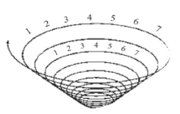
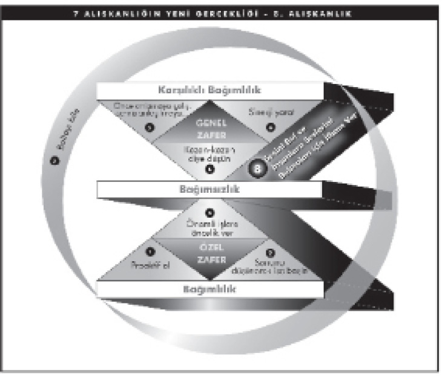
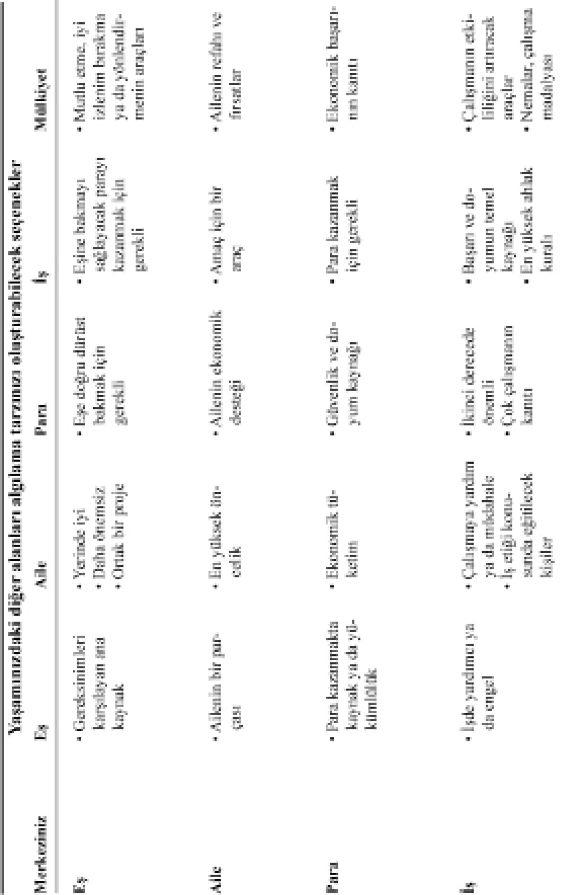
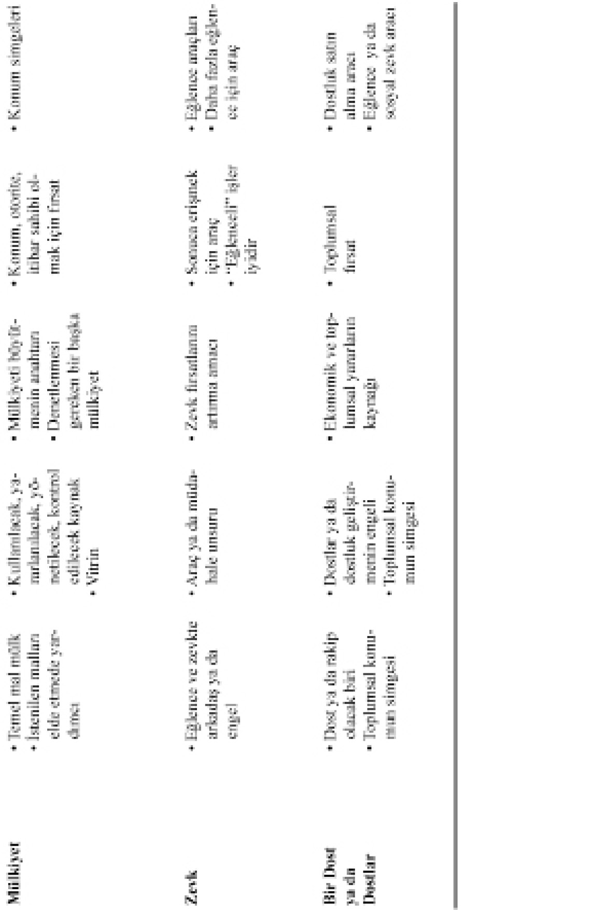
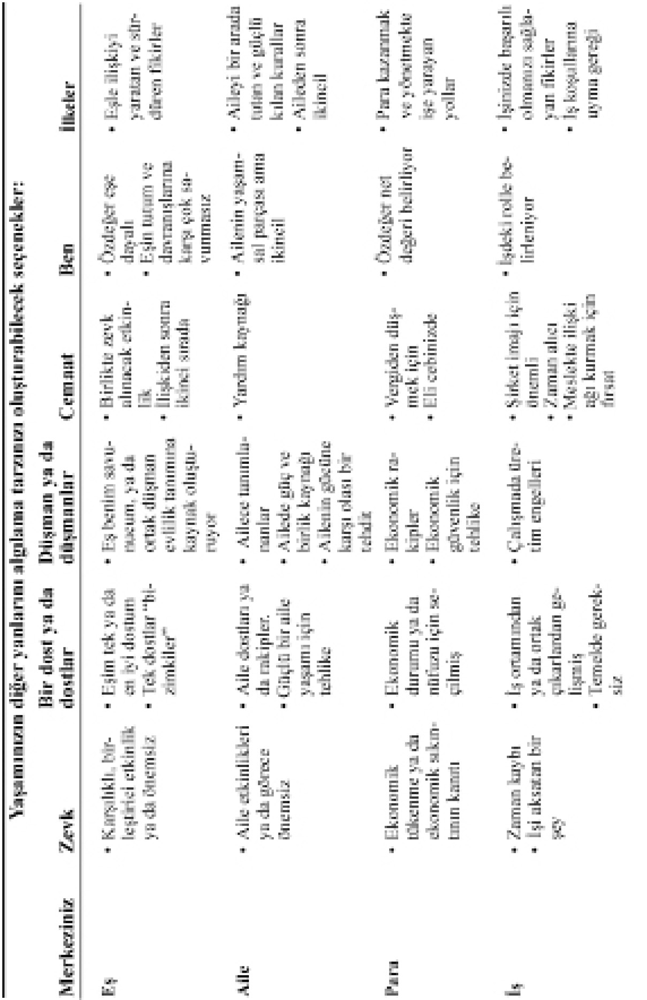
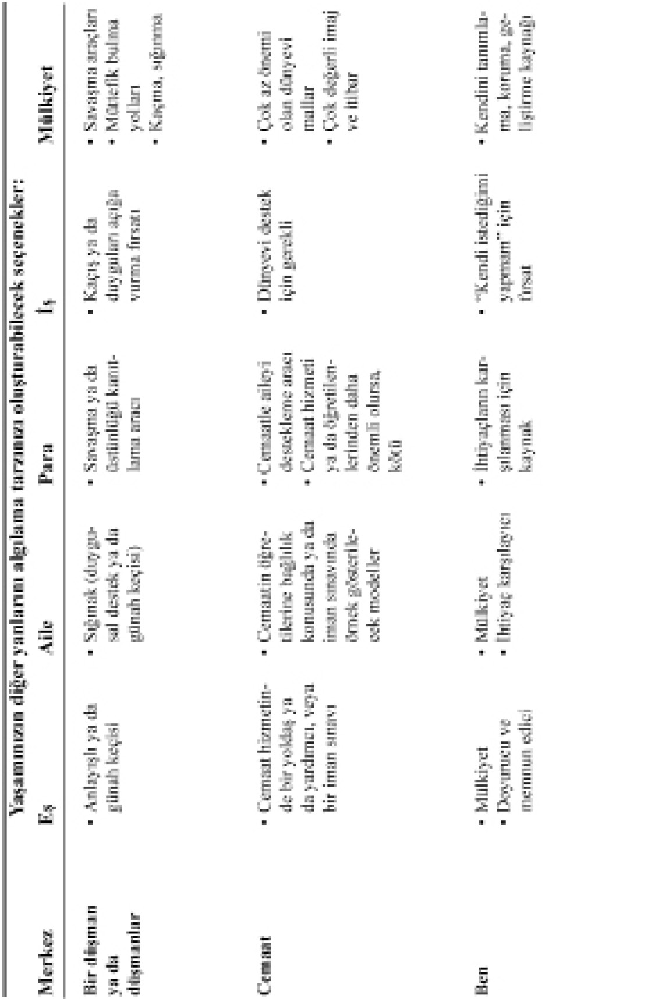
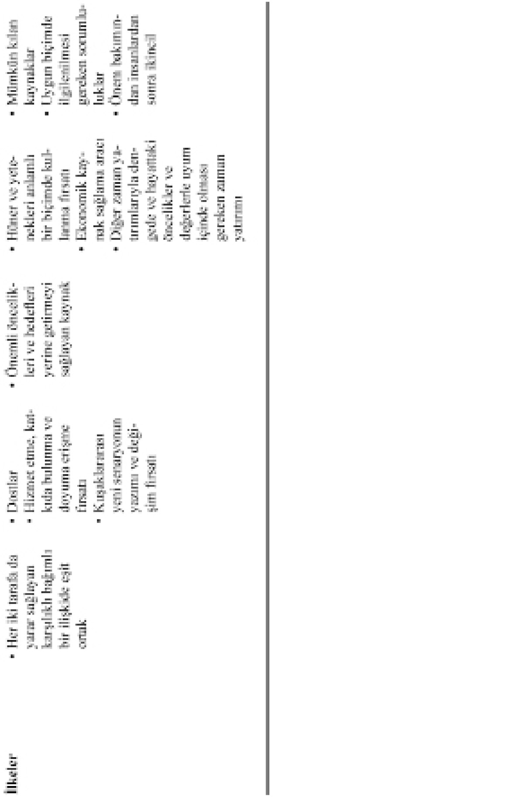
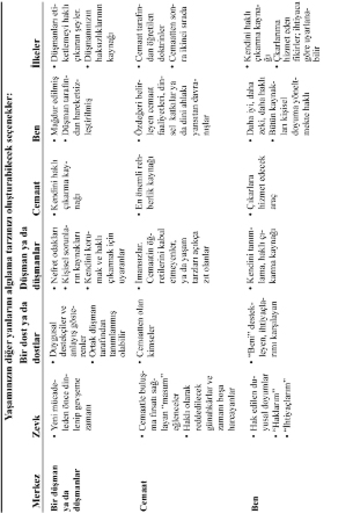
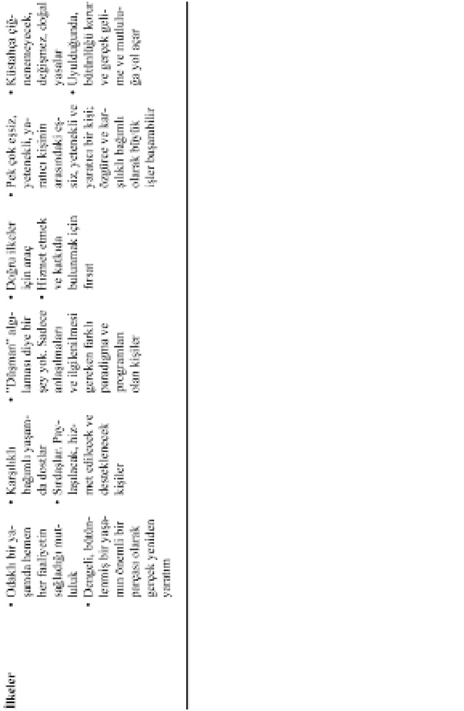
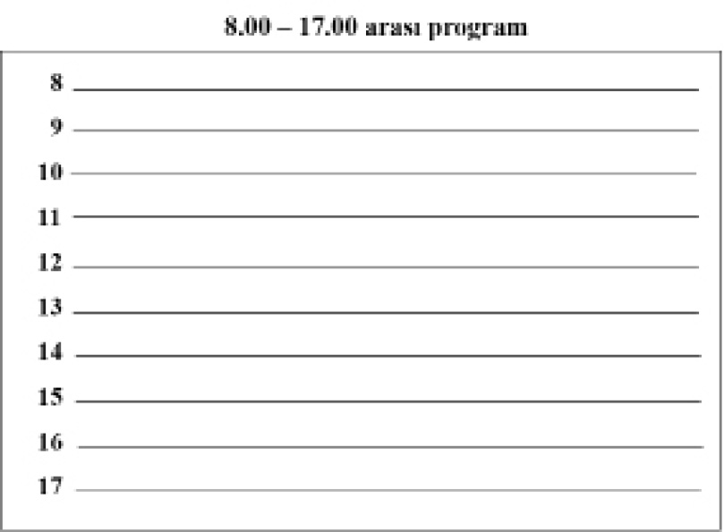

SONSÖZ: BANA SIKLIKLA SORULAN SORULAR
Doğruyu söylemek gerekirse, bu sonsözdeki bazı kişisel sorular beni her zaman mahcup etmiştir. Ama bana çok sık ve büyük bir ilgiyle soruldukları için, onları buraya almam gerektiğini düşündüm. Bu soru ve yanıtlardan birçoğu, Living the 7 Habits / Yedi Alışkanlığı Yaşamak’ta* da yer alıyor.
7 Alışkanlık 1989’da yayımlanmıştı. Sonraki yıllarda edindiğiniz pek çok deneyimden yola çıkarak neleri değiştirir, ekler ya da çıkarırdınız?
Hafife alarak yanıtlamıyorum, ama açıkçası hiçbir şeyi değiştirmezdim. Daha derinine inip daha geniş bir uygulama yapabilirdim, ama zaten sonradan çıkan bazı kitaplarda bunu yapma fırsatını buldum.
Örneğin, 250.000’den fazla kişinin, 3. Alışkanlığı, yani Önemli İşlere Öncelik Vermeyi en fazla ihmal edilen alışkanlık olarak gösterdikleri anlaşıldı. Bu nedenle, Önemli İşlere Öncelik** adlı kitap, 2. ve 3. Alışkanlıkların daha derinine indi, ama aynı zamanda diğer alışkanlıkların tümüne daha fazla içerik ve anlam kattı.
Etkili Ailelerin 7 Alışkanlığı*** , 7 Alışkanlık çerçevesindeki düşünce tarzını sağlam, mutlu ve etkili ailelerin oluşturulmasında geçerli kıldı.
Ayrıca, oğlum Sean, 7 Habits of Highly Effective Teans / Etkili Gençlerin 7 Alışkanlığı’nda*, bu çerçeveyi ergenlerin kendilerine özgü ihtiyaçları, ilgi alanları ve mücadelelerine, görsel olarak çok çekici, eğlendirici ve öğretici bir biçimde uyguladı.
On binlerce insan da, 7 Alışkanlığı içselleştirerek kendi yaşamlarının yaratıcı gücü olmanın önemli etkisinden söz etmişti. Aralarından yetmiş altı kişi, 7 Alışkanlığı Yaşamak’ta heyecan verici cesaret ve esinlenme öykülerinin ayrıntılarını paylaşarak, her türlü kişisel, ailevi ve kurumsal ortamda, içinde bulundukları koşullardan, kurum içindeki konumlarından, ya da önceki yaşam deneyimlerinden bağımsız olarak, ilkelerin dönüştürücü gücünü ortaya koydu.
Kitabın çıkmasından bu yana, 7 Alışkanlık hakkında neler öğrendiniz?
Pek çok şey öğrendim, ya da öğrendiklerimi pekiştirdim. Öğrendiğim on şeyden kısaca söz edeceğim.
1. İlkelerle değerler arasındaki farkı anlamanın önemi. İlkeler, bizim dışımızda olan ve sonuçta eylemlerimizin sonuçlarını kontrol eden doğal yasalardır. Değerler ise içsel ve özneldir; davranışlarımızın rehberi olarak en çok inandığımız şeyleri temsil ederler. Umarım ilkelere değer verir hale geliriz ve böylece şimdi istediğimiz sonuçları, gelecekte daha da iyi sonuçlar almamızı sağlayacak şekilde elde ederiz; ben etkili olmayı böyle tanımlıyorum. Herkesin değerleri vardır; hatta suç işleyen çetelerin bile. Değerler, insanların davranışlarını yönetir, ama o davranışların sonuçları ilkelerin idaresi altındadır. İlkeler bizden bağımsızdır. Onların farkında olmamızdan, onları kabullenmemizden, onlardan hoşlanmamızdan, onlara inanmamızdan ya da itaat etmemizden bağımsız bir işleyişleri vardır. Ben, alçakgönüllülüğün tüm erdemlerin anası olduğuna inanıyorum. Alçakgönüllülük, kontrolün bizim değil, ilkelerin elinde olduğunu, dolayısıyla da kendimizi ilkelere teslim etmemizi söyler. Gurur, kontrolün bizim elimizde olduğunu ve davranışlarımızı değerlerimiz yönettiği için de, nasıl istersek öyle yaşayabileceğimizi söyler. Bunu yapabiliriz, ama davranışlarımızın sonuçları, değerlerimize değil, ilkelere bağlıdır. İşte bu yüzden ilkelere değer vermeliyiz.
2. Bu malzemeyle dünyanın dört bir yanında yaşadığımız deneyimler sayesinde, sonuçta temel ilkelerin evrensel doğasını görmeye başladım. Örnekler ve uygulamalar değişebilir, bunlar kültürlere özgüdür; ilkeler ise hep aynıdır. 7 Alışkanlık’ta yer alan ilkelerin, dünyadaki altı büyük dinin her birinde bulunduğunu gördüm ve o kültürlerde eğitim verirken, o dinlerin kutsal metinlerinden alıntılar yaptım. Bunu Ortadoğu, Hindistan, Asya, Avustralya ve Güney Pasifik, Güney Amerika, Avrupa, Kuzey Amerika, Afrika’da; ve Amerikan yerlileri ile diğer yerli halklar arasında da yaptım. Erkek ya da kadın, hepimiz benzer sorunlarla yüz yüzeyiz, benzer ihtiyaçlarımız var ve içsel olarak bu temel ilkeleri yansıtıyoruz. İçsel bir adalet ya da kazan/kazan duygusu var. Sorumluluk, amaç, dürüstlük, saygı, işbirliği, iletişim, yenilenme ilkelerinin içsel bir ahlaki duygusu var. Bunlar evrenseldir. Uygulamalar ise evrensel değil, duruma özeldir. Her kültür evrensel ilkeleri kendine özgü bir biçimde yorumlar.
3. Teknik olarak, bir kuruluşun alışkanlıkları yoktur; ama ben yine de 7 Alışkanlığın kurumsal sonuçlarını görebiliyordum. Kuruluş kültürünün, alışkanlıkları temsil eden normları ya da sosyal kuralları vardır. Bir kuruluşun yerleşik sistemleri, süreçleri ve uygulama yöntemleri de alışkanlıkları temsil eder. Aslında, son tahlilde, her türlü davranış kişiseldir. Çoğu zaman yapı ve sistemler, süreçler ve uygulamalarla ilgili yönetim tarafından alınan kararlar şeklindeki kolektif davranışın bir parçası olmasına karşın, davranış bireyseldir. Neredeyse her sektör ve meslekten binlerce kuruluşla çalıştık ve neredeyse hepsinde, 7 Alışkanlık’ta yer alan temel ilkelerin geçerli olduğunu ve etkililiği tanımladığını gözlemledik.
4. Herhangi bir alışkanlıkla başlayarak, 7 Alışkanlığın tümünü öğretebilirsiniz. Ayrıca bir alışkanlığı, diğer altısının öğrenilmesine yol açacak şekilde de öğretebilirsiniz. Bu, bütünün bölümde, bölümün de bütünde saklı olduğu bir hologram gibidir.
5. 7 Alışkanlık içten dışa doğru bir yaklaşımı temsil ediyor olsa da, dışarıdaki zorlukla başlayıp daha sonra içten dışa yaklaşımı benimsediğinizde, en iyi randımanı alırsınız. Bir başka deyişle, bir ilişkide zorlanıyorsanız, sözgelimi bir iletişim ve güven kopukluğu yaşıyorsanız; bu durum, o zorluğu aşarak genel zaferi mümkün kılacak türdeki özel zaferi kazanmak için gerekli olan içten dışa yaklaşımın doğasını belirleyecektir. Çoğunlukla 1., 2. ve 3. Alışkanlıklardan önce 4., 5. ve 6. Alışkanlıkları öğretmemin nedeni de budur.
6. Karşılıklı bağımlılık, bağımsızlıktan on kat zordur. Karşı taraf kazan/kaybet zihniyetindeyken kazan/kazan diye düşünmek; içten içe anlaşılmak isterken önce anlamaya çalışmak; uzlaşmak çok daha kolayken daha iyi bir üçüncü seçenek aramak, daha da fazla zihinsel ve duygusal bağımsızlık gerektirir. Bir başka deyişle, başkalarıyla yaratıcı işbirliği içinde başarıyla çalışmak, çok büyük bir bağımsızlığı, içsel güvenliği ve kendine hakim olmayı gerektirir. Aksi takdirde, karşılıklı bağımlılık dediğimiz şey, karşı-bağımlılık, yani insanların bağımsızlıklarını öne sürmek için zıt davranmaları; ya da eş-bağımlılık, yani kişinin ihtiyaçlarını karşılamak ve kendi zaaflarını haklı çıkarmak için karşısındakinin zayıflığına kelimenin tam anlamıyla ihtiyaç duyması haline gelir.
7. İlk üç alışkanlığı “bir söz ver ve sözünü tut” deyimiyle özetleyebilirsiniz. Sonraki üç alışkanlığı ise “sorunun içine başkalarını da dahil et ve birlikte çözüme ulaş” deyimiyle özetleyebilirsiniz.
8. 7 Alışkanlık bir düzineden az kendine özgü sözcük ya da tümce içermesine karşın, yeni bir dili temsil eder. Bu yeni dil bir şifre, pek çok şey söylemenin kısa bir yolu haline gelir. Bir başkasına, “bu bankaya yatırılan mıydı, yoksa bankadan çekilen mi?”, “bu reaktif mi, yoksa proaktif mi?”, “bu sinerji mi yaratıyor, yoksa bir uzlaşma mı?”, “bu kazan/kazan mı, kazan/kaybet mi, yoksa kaybet/kazan mı?”, “bu önemli işlere mi, yoksa ikincil işlere mi öncelik verdiğimizi gösteriyor?”, “bu aracı mı, yoksa sonunu mu düşünerek işe başladığımızı gösteriyor?” gibi sorular sorulduğunda, bu çok özel şifre sözcükleriyle simgelenen ilke ve kavramların derinlemesine anlaşıldığını gördüm. Bunun yarattığı bağlılık, kültürleri tümüyle dönüşüme uğratıyor.
9. Kişisel bütünlük, insanlarla, kurumlarla hatta aileyle değil, ilkelerle bütünleşmek, ya da ilke-merkezli olmaktır. Bu anlamda, kişisel bütünlük sadakatten daha yüksek bir değerdir. Ya da daha açık bir ifadeyle, sadakatin en yüksek şeklidir. İnsanların uğraştığı meselelerden çoğunun kökünde “bu popüler (kabul edilebilir, politik) mi, yoksa doğru mu?” sorusunun yattığını göreceksiniz. Bir kişiye ya da gruba sadık kalmayı, doğru olduğunu hissettiğimiz şeyi yapmaktan öncelikli hale getirdiğimizde, kişisel bütünlüğümüzü yitiririz. Geçici olarak beğeni toplayabilir ya da sadakat oluşturabiliriz, ama kişisel bütünlüğün yitirilmesi, alttan alta o ilişkilere de zarar verecektir. Bu, birisinin arkasından konuşmaya benzer. Başkası hakkında kötü şeyler söyleyerek geçici olarak bütünleştiğiniz kişi, farklı baskılar ve koşullar altında kendisi hakkında da kötü şeyler söyleyeceğinizi bilir. Bir anlamda, ilk üç alışkanlık kişisel bütünlüğü, sonraki üç alışkanlık da sadakati temsil eder; ama bunlar tamamen iç içe geçmiştir. Zaman içinde, kişisel bütünlük sadakat üretir. Onları tersine çevirip önce sadakat peşinde koşarsanız, kişisel bütünlüğü ihmal ederek ödün verdiğinizi görürsünüz. Güvenilmek, sevilmekten iyidir. Sonuçta, güven ve saygı zaten sevgiyi yaratacaktır.
10. 7 Alışkanlığı yaşamak, herkes için sürekli bir mücadeledir. Herkes zaman zaman yedi alışkanlığın her birinde ve bazen aynı anda yedisinde birden hata yapar. Anlaşılmaları çok kolay, ama tutarlı bir biçimde uygulanmaları zordur. Sağduyu gereğidirler, ama sağduyu gereği olan, her zaman herkesçe uygulanan şeyler değildir.
Kişisel olarak hangi alışkanlıkta zorlanıyorsunuz?
5. Alışkanlık. Gerçekten yorulduğum ve haklı olduğum kanısına çoktan vardığım zamanlarda, dinlemek istemiyorum. Hatta dinliyormuş gibi yapıyorum. Esasında, bahsettiğim şey dolayısıyla, yani anlamak değil, karşılık vermek amacıyla dinlediğim için suçluyum. Aslına bakılırsa, bir anlamda, neredeyse her gün 7 Alışkanlığın her biriyle mücadele halindeyim. Hiçbirini fethetmiş değilim. Onları daha çok, hiçbir zaman tam anlamıyla hakim olamadığımız ve olmaya yaklaştıkça, aslında kat edilecek ne çok yolumuz olduğunu daha iyi fark ettiğimiz yaşam ilkeleri olarak görüyorum. Bildikçe, bilmediğinizi daha iyi bilmeniz gibi.
Bu nedenle de üniversitedeki öğrencilerime çoğu kez notun yarısını sorularının, diğer yarısını da yanıtlarının niteliğine bakarak verirdim. Gerçek bilgi düzeyleri bu şekilde daha iyi ortaya çıkar.
Benzer biçimde, 7 Alışkanlık yükselen bir sarmalı temsil eder. Yüksek düzeydeki 1. Alışkanlık, alçak düzeydeki 1. Alışkanlıktan çok farklıdır. Başlangıç düzeyinde proaktif olmak, yalnızca etkiyle tepki arasındaki boşluğun farkına varmak olabilir. Bir sonraki düzeyde, misilleme yapmamak ya da ödeşmemek gibi bir seçimi gerektirebilir. Bir sonraki düzeyde, geribildirimde bulunmayı. Bir sonraki düzeyde, bağışlanmak istemeyi. Bir sonraki düzeyde, bağışlamayı. Bir sonraki düzeyde, anne-babayı bağışlamayı. Bir sonraki düzeyde, merhum anne-babayı bağışlamayı. Bir sonraki düzeyde, sadece gücenmemeyi.

1-7
YÜKSELEN SARMAL
FranklinCovey Şirketi’nin başkan yardımcılığını sürdürüyorsunuz. FranklinCovey 7 Alışkanlığı yaşıyor mu?
Yaşamaya çalışıyoruz. Öğrettiğimiz şeyleri sürekli yaşamak, bizim en temel değerlerimizden biridir. Ama bunu mükemmel yaptığımız söylenemez. Herhangi bir işletme gibi, biz de değişen piyasa gerçekliklerinin yanı sıra, eski Covey Leadership Center (Covey Liderlik Merkezi) ve Franklin Quest’in iki farklı kültürünü bütünleştirmenin zorluklarını yaşıyoruz. Birleşme 1997 yılında gerçekleşti. İlkelerin uygulanması zaman, sabır ve sebat gerektirir ve başarımız aslında uzun vadede sınanacaktır. Şipşak çekilen fotoğraf doğru bir resim vermez.
Her uçak çoğu zaman rotasından çıkar, ama hemen uçuş planına dönüp yoluna devam eder. Eninde sonunda, hedefine ulaşır. Bu, bireyler, aileler, ya da kuruluşlar olarak hepimiz için geçerlidir. İşin anahtarı, “Sonunu Düşünmek” ve sürekli geribildirim ile sürekli rota ayarına ortak bir bağlılık göstermektir.
Neden yedi? Neden altı, sekiz, on ya da on beş değil? Yedinin kutsal yanı nedir?
Yedinin kutsal bir yanı yok; sadece üç özel zafer alışkanlığı (seçme özgürlüğü, tercih, eylem) üç genel zafer alışkanlığından (saygı, anlayış, yaratım) önce geliyor, sonra bir tanesi geride kalanları yeniliyor ve böylece yedi oluyor.
Bu soru sorulduğunda, her zaman şöyle demişimdir: Alışkanlık haline getirmek istediğiniz bir başka arzu edilir özellik varsa, onu uymaya çalıştığınız değerlerden biri olarak 2. Alışkanlığın altına yerleştirmeniz yeterli olacaktır. Bir başka deyişle, dakiklik alışkanlık haline getirmek istediğiniz arzu edilir bir özellikse, 2. Alışkanlığın değerlerinden biri olur. Böylece aklınıza ne gelirse gelsin, değer sisteminiz olan 2. Alışkanlığın altına yerleştirirsiniz. 1. Alışkanlık, bir değer sistemine sahip olabileceğiniz, kendi değer sisteminizi seçebileceğiniz fikrini içerir. 2. Alışkanlık, o tercih ya da değerlerinizden oluşur, 3. Alışkanlık da onlara uymaktır. Dolayısıyla bunlar çok temel, genel nitelikte ve birbirine bağlıdır.
7 Alışkanlığın yeni baskısı için bu sonsözü yazdığım sırada, The 8th Habit: From Effectiveness to Greatness / 8’inci Alışkanlık: Bütünlüğe Doğru* adlı yeni bir kitabı henüz tamamlamıştım. Buna 8. Alışkanlık adının verilmesi, bazı kişilere standart yanıtımdan bir sapma gibi görünebilir. Ama bu yeni kitabın açılış bölümünde söylediğim gibi, dünya Etkili İnsanların 7 Alışkanlığı’nın yayımlandığı 1989 yılından bu yana büyük ölçüde değişti. Kişisel yaşantımızda ve ilişkilerimizde, ailemizde, meslek yaşamımızda, çalıştığımız kuruluşlarda karşılaştığımız zorlukların boyutu da değişti. Aslında, birçok kişi Berlin Duvarı’nın çöküşüne tanık olduğumuz 1989 yılını, Bilgi Çağı’nın başlangıcı, yeni bir gerçekliğin doğuşu, son derece önemli, geniş çapta bir değişim – yani tam anlamıyla yeni bir çağ başlangıcı olarak gösteriyor.

Bireyler ve kuruluşlar olarak etkili olmak, bugünün dünyasında bir seçenek değildir artık; sahaya çıkabilmenin bedelidir. Ama bu yeni gerçeklikte ayakta kalmak, başarmak, yenilik yapmak, mükemmelleşmek ve önder olmak, etkililiği temel alıp ötesine ulaşmayı gerektirecektir. Yeni çağın talebi ve ihtiyacı, uygulamadır. Tutkuyla ideal olanı bulma, anlamlı bir katkıda bulunma ve bütünlüktür. Bunlar farklı bir düzlem ya da boyuttadır. Tür olarak farklıdır – tıpkı anlamlılığın, başarıdan derece değil de tür açısından farklı olması gibi. İnsana özgü deha ve motivasyonun daha üst düzeylerine –buna ses de diyebiliriz– ulaşmak, yeni bir zihin yapısı, yeni beceriler, yeni araçlar… yeni bir alışkanlık gerektirir.
Demek ki Sekizinci Alışkanlığın amacı, Yedinciye –bir şekilde unutulmuş olan– bir başka alışkanlığın eklenmesi değildir. Amaç, 7 Alışkanlık’ta yeni Bilgi İşçisi Çağı’nın bu en önemli zorluğunu karşılayacak üçüncü bir boyutun gücünü görmek ve onu kullanmaktır.
Şöhret sizi nasıl etkiliyor?
Beni farklı biçimlerde etkiliyor. Ego açısından, koltuk kabartıcı. Öğreti açısından tevazu gerektiriyor, ama belirtmem gerekir ki, bu ilkelerden hiçbirini ben yaratmadım ve kesinlikle itibarı hak etmiyorum. Bunu alçakgönüllü görünmek arzusuyla söylüyor değilim. Buna –bizzat– inandığım için söylüyorum. Kendimi, çoğunuz gibi, hakikat ve anlayış arayan biri olarak görüyorum. Ben bir guru değilim; bana guru denmesinden hoşlanmıyorum. Hiçbir mürit istemiyorum. Sadece insanların vicdanlarına sadık kalarak yaşayacakları, kalplerinde zaten var olan ilkelere yönelik bir müritliği teşvik etmeye çalışıyorum.
Yeni baştan yapmanız gerekseydi, bir iş insanı olarak farklı bir biçimde yapacağınız tek şey ne olurdu?
Birlikte çalışacağım insanları daha stratejik, proaktif bir şekilde arar ve seçerdim. Acil işlere gömüldüğünüzde ve havada uçuşan binlerce balonunuz olduğunda, çözümlere sahipmiş gibi görünen kişileri kilit konumlara getirmek çok kolaydır. Genelde, geçmişlerine ve modellere derinlemesine bakılmaz, “gereken özen” gösterilmez; belirli rol ya da görevlerde uyulması gereken kıstasları dikkatle oluşturmak gibi bir eğilim de yoktur. Eminim ki işe alınacak insanlar stratejik biçimde, yani o anki baskılara dayalı olarak değil de, uzun vadeli ve proaktif biçimde düşünülerek seçilirse, bunun uzun vadede çok büyük getirileri olur. Bir zamanlar birisi, “Neyi cidden arzu ediyorsak, en kolay ona inanırız,” demişti. Hem karaktere hem de yeterliliğe derinlemesine bakmanız gerekir, çünkü önünde sonunda, bu alanlardan birindeki kusurlar, kendini her iki alanda da gösterecektir. Eğitme ve geliştirme önemli olsa da, işe alınacak insanları aramanın ve seçmenin çok daha önemli olduğu kanısındayım.
Yeni baştan yapmanız gerekseydi, bir baba olarak farklı bir biçimde yapacağınız tek şey ne olurdu?
Bir baba olarak, keşke çocuklarımın her biriyle, yaşamlarının farklı evrelerinde yumuşak, gayri resmi kazan/kazan anlaşmalarının özenle oluşturulmasına daha fazla zaman harcamış olsaydım. İş ve yolculuklar nedeniyle çocuklarımı çoğu zaman şımarttım ve bedelini ödeyip esaslı, sağlam kazan/kazan anlaşmalarının daha tutarlı bir biçimde oluşturulmasına yeterli olacak ilişkileri kurmak yerine, kaybet/kazan’ları tercih ettim.
Teknoloji gelecekte iş dünyasını nasıl değiştirecek?
Stan Davis’in, “Altyapı değiştiğinde, her şey sarsılır,” sözüne inanıyorum ve teknik altyapının, her şey için merkezi önem taşıdığını düşünüyorum. Bütün iyi ve kötü trendleri hızlandıracaktır. Ayrıca insani unsurun, tam da bu nedenlerle daha önemli hale geldiğine inanıyorum. Yüksek teknoloji yüksek temassız işlemez ve teknoloji ne kadar etkili olursa, o teknolojiyi kontrol eden insan etkeninin önemi o kadar artar; özellikle o teknolojinin kullanımındaki kıstaslara kültürel bir bağlılığın geliştirilmesi açısından.
7 Alışkanlığın bütün dünyada (diğer ülkeler/kültürler/kuşaklar/cinsiyetler arasında) popüler olması sizi şaşırttı mı?
Hem evet, hem hayır. Evet, çünkü kitabın dünya çapında bir olay olacağı ve içerdiği sözlerden birkaçının Amerikan dilinin bir parçası haline geleceği aklımdan bile geçmezdi. Hayır, çünkü malzeme 25 yıldan uzun bir süre içinde sınanmıştı ve öncelikle de benim icat etmediğim, dolayısıyla da üstünde hak talep etmediğim ilkelere dayalı olması nedeniyle işe yarayacağını biliyordum.
7 Alışkanlığı çok küçük yaştaki çocuklara öğretmeye nasıl başlardınız?
Sanırım, Albert Schweitzer’in çocuk yetiştirmekle ilgili üç temel kuralına uyardım: Birincisi, örnek ol; ikincisi, örnek ol; üçüncüsü, örnek ol. Ama o kadar ileri gitmezdim. Şöyle derdim: Birincisi, örnek ol; ikincisi, özenli ve onaylayıcı bir ilişki kur; ve üçüncüsü, alışkanlıkların altında yatan fikirleri çocukların dilinde öğret – 7 Alışkanlık hakkında temel bir anlayış ve sözcük dağarcığı edinmelerine yardım et ve onlara ilkeler aracılığıyla kendi deneyimlerini nasıl işleyeceklerini göster; yaşamlarında hangi belirli ilke ve alışkanlıkların örnek oluşturduğunu saptamalarına izin ver.
Patronumun (eşimin, çocuğumun, arkadaşımın, vb.) 7 Alışkanlığa gerçekten ihtiyacı var. Okumalarını sağlayabilmem için bana ne önerirsiniz?
İnsanlar, ne kadar önemsediğinizi bilinceye kadar, ne kadar bildiğinizi önemsemezler. Güvenilir bir karakter örneğine dayalı olan bir güven ve açıklık ilişkisi kurun, sonra da 7 Alışkanlığın size nasıl yardımcı olduğunu onlarla paylaşın. Sadece 7 Alışkanlığın hayatınızdaki rolünü görmelerini sağlayın. Sonra, uygun zamanda, onları bir eğitim programına davet edebilir, ya da hediye olarak kendi kitabınızı paylaşabilir veya yeri geldiğinde temel fikirlerden bazılarını öğretebilirsiniz.
Geçmişiniz nedir ve 7 Alışkanlığı yazma noktasına nasıl geldiniz?
Babamın izinden gidip aile işine gireceğime dair üstü örtülü bir anlaşma vardı. Ne var ki ben, iş dünyasının kendisinden çok liderlere ders verip onları eğitmekten zevk aldığımı fark ettim. Harvard İşletme Okulu’ndayken, kuruluşların insani yanıyla derinden ilgilenmeye başladım. Sonradan, Brigham Young Üniversitesi’nde işletme dersleri verdim, bir yandan da yıllarca danışmanlık yapıp insanları eğittim. O sıralarda, bir dizi ardışık ve dengeli ilke çerçevesinde, entegre liderlik ve yönetim geliştirme programlarına ilgi duymaya başladım. Bunlar sonunda 7 Alışkanlığa dönüştü ve daha sonra kuruluşlara uygularken, ilke-merkezli liderlik kavramı haline geldi. Üniversiteden ayrılıp, tam zamanlı olarak farklı kuruluşların yöneticilerini eğitme işine geçmeye karar verdim. Çok dikkatlice oluşturulmuş bir ders programını bir yıl uyguladıktan sonra, sıra bu malzemeyi dünyanın her yerindeki insanlara ulaştırmamızı sağlayacak bir işin geliştirilmesine geldi.
Başarının gerçek formülüne sahip olduğunu iddia eden insanlara yanıtınız nedir?
İki şey söylerdim. Birincisi, bahsettikleri şey ilkelere ya da doğal yasalara dayalıysa, onlardan öğrenmek ister ve kendilerine saygı duyarım. İkincisi, muhtemelen aynı temel ilkeleri ya da doğa yasalarını tanımlamakta farklı sözcükler kullanıyor olduğumuzu söylerdim.
Gerçekten kel misiniz, yoksa hız ve verimlilik uğruna kafanızı tıraş mı ediyorsunuz?
Hey, baksanıza, siz saçınızı kurutmakla meşgulken, ben dışarıda müşterilere hizmet veriyorum. Aslına bakılırsa, “Kel güzeldir,” deyimini ilk kez duyduğumda, sevinçten tekmeler atarak karyolamın parmaklıklarını kırmışım!
Ek A - ÇEŞİTLİ : MERKEZLERDEN KAYNAKLANAN OLASI ALGILAR








Ek B - BÜRODA: BİR İKİNCİ KARE GÜNÜ
Aşağıdaki alıştırma ve analiz, bir II. Kare paradigmasının iş ortamındaki etkisini çok pratik bir düzeyde anlamanıza yardım etmek için hazırlandı.
Diyelim ki, büyük bir ilaç şirketinin pazarlama müdürüsünüz. Büroda sıradan bir güne başlamak üzeresiniz. O günün iş programına bakarken, yapılacak şeylerin her birinin ne kadar zaman alacağını saptıyorsunuz.
Önceliğe göre sıralanmamış olan listeniz şöyle:
1. Genel Müdürle öğle yemeği yemek istiyorsunuz (1-1,5 saat)
2. Size bir gün önce, önünüzdeki yıla ait medya bütçenizi hazırlamanız için talimat verilmiş. (2-3 gün)
3. “Gelen evrak” sepetiniz dolup, “Gidecek evrak” sepetine kayacak kadar taşmış. (1-1,5 saat)
4. Satış müdürüyle geçen ayki satışları konuşmanız gerekiyor; bürosu, koridorun dibinde (4 saat).
5. Sekreterinizin acil olduğunu söylediği birkaç mektup var (1 saat).
6. Masanıza yığılmış olan tıp dergilerine göz atmak istiyorsunuz (½ saat).
7. Gelecek ay yapılacak satış toplantısı için bir rapor hazırlamanız gerekiyor (2 saat).
8. Üretilen son parti “X” ürününün kalite kontrolünden geçmediğine dair söylentiler var.
9. Sağlık Bakanlığı ilaç tescil dairesinden biri, sizi “X” ürünü için aramış. Kendisini aramanızı istiyor. (½ saat).
10. Saat 14.00’te Yönetim Kurulu toplantısı var. Ama bunun neyle ilgili olduğunu bilmiyorsunuz (1 saat).
Şimdi birkaç dakika durun ve gününüzü etkili bir biçimde programlamak için 1., 2. ve 3. Alışkanlıklar’dan öğrendiklerinizi kullanın.

Sizden sadece bir günü planlamanızı isteyerek, dördüncü kuşak zaman yönetiminin temeli sayılan geniş hafta yelpazesini ortadan kaldırmış oldum. Ama dokuz saatlik bir sürede bile II. Kare’ye özgü, ilke merkezli bir paradigmanın gücünü görebileceksiniz.
Listedekilerden çoğunun aslında I. Kare etkinlikleri olduğu apaçık. 6. madde, yani tıp dergilerinin okunması dışında her şey görünüşte hem önemli, hem de acil.
Önceliğe göre sıralanmış değerler ve hedefleri kullanan bir üçüncü kuşak zaman yöneticisi olsaydınız, programlamayla ilgili kararlar vermek için bir dayanağınız olurdu. Her şeyi belki de A, B ya da C diye sınıflandırırdınız. Sonra da A, B, C’nin altındakilere 1, 2, 3, diye birer numara verirdiniz. Ayrıca, işin içindeki diğer insanların elverişliliği ve öğle yemeğine ayrılacak mantıklı süre gibi koşulları da göz önüne alırdınız. Sonunda, bütün bu etkenleri temel alarak, gününüzü programlardınız.
Bu alıştırmayı yapmış olan pek çok zaman yöneticisi, tam olarak tarif ettiğim şekilde davranıyor. Neyi ne zaman yapacaklarına karar veriyorlar. Yapılan ve açıkça tanımlanan varsayımlara dayanarak o günkü işleri tamamlıyor, ya da hiç olmazsa başlıyor, geri kalanları ise ertesi güne ya da başka bir zamana bırakıyorlar.
Örneğin, çoğu kişi sabah sekizle dokuz arasındaki süreyi, yönetim kurulu toplantısının gündemini tam olarak öğrenmek için harcayıp hazırlık yapacaklarını söylüyorlar; sonra öğleyin genel müdürle yemek yiyeceklerini, bakanlığın telefonuna yanıt vereceklerini; ardından satış müdürüyle birkaç saat konuşup, çok önemli ve acil mektuplarla ilgileneceklerini; bu arada kalite kontrolünden geçmediği anlaşılan son X ürünü partisiyle ilgili söylentileri araştıracaklarını belirtiyorlar. O sabahın geri kalan saatleri genel müdürle yenecek öğle yemeği ve/veya Yönetim Kurulu toplantısına hazırlanarak ya da “X” ürünüyle ilgili sorunlar neyse, onların çözülmesiyle ve geçen ayki satışlarla ilgilenerek geçiyor.
Öğleden sonra ise sözü edilen tamamlanmamış işler ve/veya diğer önemli ve acil yazışmalarla ilgileniliyor. “Gelen” sepetindeki evrak yığını biraz azaltılıp o gün çıkabilecek diğer önemli ve acil meselelerle uğraşılıyor.
Çoğu kişi, gelecek yılın medya bütçesi hazırlığı ile gelecek aya ait satış toplantısı için gerekli olan raporun, bu kadar çok I. Kare etkinliğini içermeyen bir başka güne ertelenebileceğini düşünüyor. Bunların her ikisinin de II. Kare etkinlikleri olduğu belli, çünkü uzun vadeli düşünme ve planlamayı gerektiriyor. Tıp dergileri yine bir kenara bırakılıyor, çünkü bunların da II. Kareyle ilgili olduğu ve yukarıda sözü edilen diğer iki II. Kare sorunu kadar önem taşımadığı çok açık.
Üçüncü kuşak zaman yöneticileri neyi ne zaman yapacakları konusunda farklılık gösterseler de, bu şekilde düşünüyorlar.
Siz bu konuları programlarken hangi yaklaşımı benimsediniz? Üçüncü kuşağınkine benzer bir yaklaşımı mı? Yoksa II. Kare, dördüncü kuşak yaklaşımını mı uyguladınız? (Bakınız: Zaman Yönetimi Matrisi, sayfa 171.)
II. Kare Yaklaşımı
Şimdi listedeki işleri II. Kare yaklaşımıyla inceleyelim. Mümkün olan tek senaryo budur. II. Kare paradigmasına uygun başka senaryolar da yaratılabilir, ama temsil ettiği düşünce türünü örnekleyen budur.
II. Kare yöneticisi olarak, Ü etkinliklerinden çoğunun I. Kare’de, ÜY etkinliklerinden çoğunun da II. Kare’de olduğunu kabul edersiniz. I. Kare’yi yönetilebilir duruma getirmenin tek yolunun, II. Kare’yi dikkate almak olduğunu bilirsiniz. Bunu ilk önce önlemler ve fırsatlar üzerinde çalışarak, III. ve IV. Karelere “hayır” deme cesaretini göstererek yaparsınız.
SAAT 14.00’TEKİ YÖNETİM KURULU TOPLANTISI. Öğleden sonra saat ikideki yönetim kurulu toplantısına katılacak yöneticiler için bir gündem olmadığını ya da toplantıya gidinceye kadar gündemi öğrenemeyeceğinizi farz edeceğiz. Bu ender görülen bir durum değildir. Sonuç olarak, yöneticiler hazırlıksız gelir ve “işi idareye çalışırlar.” Bu tür toplantılar genellikle kötü düzenlenir ve birincil odak noktaları hem önemli hem de acil olan, çoğu kişinin bilgilendirilmediği I. Kare sorunlarıdır. Genellikle zaman kaybına neden olur, sonuçlar yetersizdir ve çoğu zaman kurul başkanının egosunu okşamak için düzenlenir.
Toplantıların çoğunda II. Kare konuları genellikle “diğer işler” diye sınıflandırılır. Parkinson Kuralı’na göre “iş büyüyüp, tamamlanmasına ayrılan süreyi doldurur”; dolayısıyla da çoğu kez konuların görüşülmesine zaman kalmaz. Zaman olsa bile, I. Kare insanları öylesine ezip hırpalar ki, kimsede onlarla ilgilenecek takat kalmaz.
II. Kare’ye, önce kendinizi gündeme aldırarak geçebilirsiniz. Yönetim Kurulu toplantılarının değerinin nasıl artırılacağı konusunda bir sunum yapabilirsiniz. Size yalnızca birkaç dakikalığına söz verilse bile, bir sonraki toplantıda söyleyeceklerinizi daha etraflıca dinlemelerini sağlayacak kadar ilgi uyandırmak için, sabah bir-iki saatinizi bu sunumun hazırlanmasına ayırabilirsiniz. Sunumda, her toplantının açıkça belirlenmiş bir hedefi ve tüm katılımcıların katkısıyla iyice düşünülerek hazırlanmış bir gündemi olmasının önemine odaklanırsınız. Nihai gündem yönetim kurulu başkanı tarafından belirlenecek ve ilk önce genellikle mekanik düşünmeyi gerektiren I. Kare sorunları yerine, daha çok yaratıcı düşünceyi gerektiren II. Kare sorunları üzerinde durulacaktır.
Bu sunumda ayrıca toplantının hemen ardından, verilen görevlerin ve rapor verme tarihlerinin belirtildiği tutanakların herkese gönderilmesinin önemini vurgularsınız. Sonra bu konular ilerideki uygun gündemlere yerleştirilecek ve gündemler, diğerlerinin tartışmaya hazırlanmana yeterince zaman bırakacak kadar erken gönderilecektir.
İşte, programdaki bir maddeye –saat 14.00’teki yönetim kurulu toplantısına– II. Kare açısından bakıldığı zaman yapılabilecek şey budur. Bunun için yüksek bir proaktivite düzeyi ve günün olaylarını sıraya dizmeniz gerektiği varsayımına meydan okuma cesareti gereklidir. Ayrıca, genellikle bir kurul toplantısında görülen kriz atmosferinden kaçınabilmek için ince düşünceli olmak da gerekir.
Listedeki diğer maddelerin hemen hepsine, II. Kare’ye özgü düşünce tarzıyla yaklaşılabilir. Belki Sağlık Bakanlığı’yla yapılacak görüşme bunun dışında tutulabilir.
BAKANLIK TELEFONUNA CEVAP. İlaç tescil dairesiyle olan ilişkinin niteliğine dayanarak, durumla gereğince ilgilenebilmek için görüşmeyi sabah saatlerinde yaparsınız. Bu görevi başkasına devretmek zor olabilir; çünkü karşınızda I. Kare kültürüne sahip olabilecek bir başka kurum ve herhangi bir temsilcinizin değil, sizin yanıt vermenizi isteyen bir birey vardır.
Yönetim kurulunun bir üyesi olarak kendi kuruluşunuzun kültürünü doğrudan etkilemeye çalışabilirsiniz, ama Etki Alanınız muhtemelen bakanlığın kültürünü etkileyecek kadar geniş değildir. Bu nedenle talebi yerine getirirsiniz. Telefon konuşması sırasında açığa çıkan sorun kalıcı ya da kronikse, o zaman ileride böyle sorunlar çıkmasını önlemek için buna II. Kare zihniyetiyle yaklaşabilirsiniz. Burada da yine, bakanlıkla aranızdaki ilişkinin niteliğini değiştirme ya da sorunlarla önleyici bir biçimde ilgilenme fırsatını yakalamak, büyük ölçüde proaktivite gerektirir.
GENEL MÜDÜRLE ÖĞLE YEMEĞİ. Genel müdürle yiyeceğiniz yemeği, uzun süreli II. Kare sorunlarını oldukça samimi bir havada görüşmek için ender bulunur bir fırsat olarak görüyor olabilirsiniz. Bu da yeterince hazırlanmak için sabah yarım ya da bir saatinizi alabilir, ya da iyi bir sosyal etkileşim yaşamaya ve belki de hiçbir plan yapmadan dikkatlice dinlemeye karar verebilirsiniz. Her iki olasılık da, genel müdürle ilişkinizi geliştirmek için iyi bir fırsat olabilir.
MEDYA BÜTÇESİNİ HAZIRLAMAK. İkinci maddeyle ilgili olarak, medya bütçesinin hazırlanmasıyla doğrudan ilgili olan iki-üç iş arkadaşınızı çağırıp, onlardan önerilerini “tamamlanmış bir kadro çalışması” halinde getirmelerini isteyebilirsiniz. (Belki o zaman bütçeyi onaylamak için sadece parafınız yeterli olur.) Ya da onlara iyi düşünülmüş iki-üç seçeneğin ana hatlarını hazırlamalarını söyleyerek, seçeneklerin sonuçlarını teker teker saptayıp içlerinden birini seçebilirsiniz. Bu, günün herhangi bir vaktinde yapılabilir ve istenilen sonuçları, izlenecek kuralları, kaynakları, sorumlulukları ve elde edilecek neticeleri incelemek tam bir saatinizi alabilir. Ama bu bir saatlik yatırımı yaparak, farklı bakış açılarına sahip olabilecek insanların en uygun düşüncelerini öğrenebilirsiniz. Daha önce denemediyseniz, bu yaklaşımın neleri içerdiği, “tamamlanmış bir kadro çalışmasının” ne anlama geldiği, farklılıkların etrafında nasıl sinerji yaratılacağı, alternatif seçeneklerin ve sonuçların nasıl saptanacağı konusunda onları eğitmek için daha fazla zaman harcamanız gerebilir.
“GELEN EVRAK” SEPETİ VE MEKTUPLAR. Gelen evrak sepetine hemen dalmak yerine, yarımla bir saat arası bir zaman ayırarak, sekreterinizi eğitmeye başlayabilirsiniz. Böylece, hem “gelen evrak” sepetiyle, hem de beşinci maddede belirtilen mektuplarla ilgilenmek için yavaş yavaş yetki kazanır. Bu eğitim programı birkaç hafta, hatta birkaç ay sürebilir. Sonunda sekreteriniz ya da asistanınız, yöntemlere değil, sonuçlara önem vermeyi öğrenir.
Sekreterinizi, bütün mektupları ve dolup taşan sepetteki evrakı inceleyecek, analiz edecek ve mümkün olduğu kadar çok sayıda belgeyle ilgilenecek şekilde eğitebilirsiniz. Sekreter, güvenilir biçimde üstesinden gelemeyeceği evrakı dikkatle ayırıp, önemlerine göre sıralayarak, üzerine bir öneri ya da işin sizi ilgilendirdiğine ilişkin bir not iliştirip size getirir. Böylece sekreteriniz ya da yönetim asistanınız, birkaç ay içerisinde evraklarla mektupların yüzde seksen-doksanıyla baş edecek duruma gelir. Çoğu zaman bunu sizden daha iyi başarır. Çünkü sizin zihniniz, I. Kare sorunlarına gömülü olmak yerine, II. Kare fırsatlarına odaklıdır.
SATIŞ MÜDÜRÜ VE GEÇEN AYIN SATIŞLARI. Dördüncü maddeye bir II. Kare yaklaşımı; satış müdürüyle olan bütün ilişkinizi ve performans anlaşmanızı, II. Kare yaklaşımının kullanılıp kullanılmadığını anlayabilmek için etraflıca düşünmektir. Alıştırmada, satış müdürüyle ne konuşmanız gerektiği belirtilmemiş; fakat bunun I. Kare sorunu olduğunu varsayarak, II. Kare yaklaşımından yararlanıp sorunun kronik niteliği üzerinde çalışabilir, ya da acil ihtiyacı karşılamak için I. Kare yaklaşımını benimseyebilirsiniz.
Sekreterinizi, meseleyi sizin katılımınız olmaksızın halledip, dikkatinizi sadece bilmeniz gereken şeylere çekmesi için eğitebilirsiniz. Bu, satış müdürünüz ve emrinizde çalışan kişilerle bazı II. Kare etkinliklerini içerebilir. Böylece onlara ana işlevinizin yönetmek değil, liderlik olduğunu öğretirsiniz. Onlar da sorunu sekreterinizle birlikte sizden daha iyi çözebileceklerini anlamaya başlayıp, II. Kare liderlik çalışmaları için sizi serbest bırakırlar.
Satış müdürünün, bağlantıyı sekreterinizin kurmasından alınabileceğini düşünüyorsanız, o zaman aranızdaki ilişkiyi güçlendirmeye başlarsınız. Böylece, sonunda ikinizin de daha yararlı olan II. Kare yaklaşımını benimsemesini sağlayacak şekilde satış müdürünün güvenini kazanırsınız.
BİRİKEN TIP DERGİLERİNİ OKUMAK. Tıp dergilerini okumak, ertelemek isteyebileceğiniz bir II. Kare etkinliğidir. Ancak uzun vadede profesyonel yeterlilik ve güvenilirliğiniz, bu literatürü yakından izlemenize bağlı olabilir. Bu nedenle, elemanlarınızla yapacağınız toplantıda bu konuyu gündeme alabilirsiniz. Tıp dergilerinin grup tarafından sistemli bir biçimde okunmasını önerebilirsiniz. Yardımcılarınız değişik dergileri inceleyip daha sonraki toplantılarda diğerlerine öğrendiklerinin özünü aktarabilirler. Ayrıca, diğerlerine herkesin okuyup anlaması gereken önemli makaleleri ve bölümleri verebilirler.
GELECEK AYKİ SATIŞ TOPLANTISINA HAZIRLIK. Yedinci maddeyle ilgili olası bir II. Kare yaklaşımı, yanınızda çalışanlardan küçük bir grup oluşturup, satış elemanlarının ihtiyaçlarını analiz etme görevini vermek olabilir. Bir hafta ya da on gün içerisinde belirli bir tarihte, tamamlanmış bir öneri getirmelerini istersiniz; böylece onu uyarlayıp, uygulanmasını sağlamak için yeterince zamanınız olur. Yardımcılarınızın, satış elemanlarının gerçek istek ve ihtiyaçlarını öğrenebilmek için her biriyle ayrı ayrı konuşmaları, ya da satış grubundan örnekleme yapmaları gerekebilir. Böylece satış toplantısının gündemi konuya uygun olur ve görüşme gününden çok daha önce gönderilerek, satış elemanlarının hazırlanıp içerikle gereğince ilgilenmeleri sağlanır.
Satış toplantısını kendiniz düzenlemek yerine, bu görevi farklı bakış açılarını ve değişik satış sorunlarını temsil eden küçük bir gruba devredebilirsiniz. Yapıcı ve yaratıcı bir etkileşim kurarak, size tamamlanmış bir öneri getirmelerine izin verin. Bu tür görevlere alışık değillerse, o toplantının bir bölümünde onları eğitebilir, bu yaklaşımı neden seçtiğinizi ve bunun onlar için de ne kadar yararlı olacağını anlatabilirsiniz. Bunu yaparken de, onlara uzun vadeli düşünmeyi, ortak çalışmanın tamamlanmasından ya da diğer istenilen sonuçlardan sorumlu olmayı, karşılıklı bağımlı olarak yaratıcı bir etkileşim kurmayı ve belirtilen süreler içerisinde kaliteli bir iş çıkarmayı öğretirsiniz.
“X” ÜRÜNÜ VE KALİTE KONTROLÜ. Şimdi kalite kontrolünden geçmeyen “X” ürünüyle ilgili sekizinci maddeye bakalım. II. Kare yaklaşımı, kronik ya da kalıcı bir boyutunun olup olmadığını görmek için sorunu incelemek olacaktır. Eğer varsa, bu kronik sorunun dikkatlice analiz edilmesi görevini diğerlerine devredebilirsiniz. Size bir öneri getirmelerini ya da elde ettikleri bulgulara göre harekete geçmelerini ve sonuçları size bildirmelerini isteyebilirsiniz.
Bürodaki bu II. Kare gününün net etkisi, zamanınızın büyük bir bölümünü görevleri devrederek, eğiterek, kurul toplantısı için bir konuşma hazırlayarak, bir telefon görüşmesi yaparak ve verimli bir öğle yemeği yiyerek geçiriyor olmanızdır. Uzun vadeli bir ÜY yaklaşımını benimsediğiniz için, büyük olasılıkla birkaç hafta ya da birkaç ay boyunca bu tür bir I. Kare programlama sorunuyla karşılaşmayacaksınız.
Analizi okurken, bunun idealist bir yaklaşım olduğunu düşünebilirsiniz. II. Kare yöneticilerinin hiç mi I. Kare’de çalışmadıklarını merak edebilirsiniz.
Bunun idealist bir yaklaşım olduğunu kabul ediyorum. Bu kitap, etkisiz insanların alışkanlıklarıyla değil; etkili insanların alışkanlıklarıyla ilgilidir ve etkili olmak, uğrunda çaba harcamaya değecek bir idealdir.
Elbette ki I. Kare’de zaman geçirmeniz gerekecektir. II. Kare’de yapılan en iyi planlar bile bazen uygulanamaz. Ancak I. Kare, küçültülerek daha iyi yönetilecek boyutlara indirilebilir. Böylece yalnız sağlığınızı değil, yargı yeteneğinizi de olumsuz etkileyen stresli bir kriz atmosferinde sürekli yaşamaktan kurtulursunuz.
Kuşkusuz bu, oldukça büyük bir sabır ve sebat gerektirir ve sorunların tümünde ya da çoğunda II. Kare yaklaşımını gösteremeyebilirsiniz. Ama birkaç konuda ilerleme kaydedip, kendinizde olduğu kadar, başkalarında da daha fazla II. Kare zihniyeti oluşmasına yardımcı olursanız, ileride performansın büyük ölçüde arttığını göreceksiniz.
Bir aile ya da küçük bir iş ortamında bu tür bir yetki devrinin mümkün olmayabileceğini de kabul ediyorum. Ama bu, Etki Alanınızın içinde II. Kare inisiyatifini kullanarak I. Kare krizlerinin boyutlarını küçültmenin ilginç ve yaratıcı yollarını üretecek olan II. Kare zihniyetini engellemez.